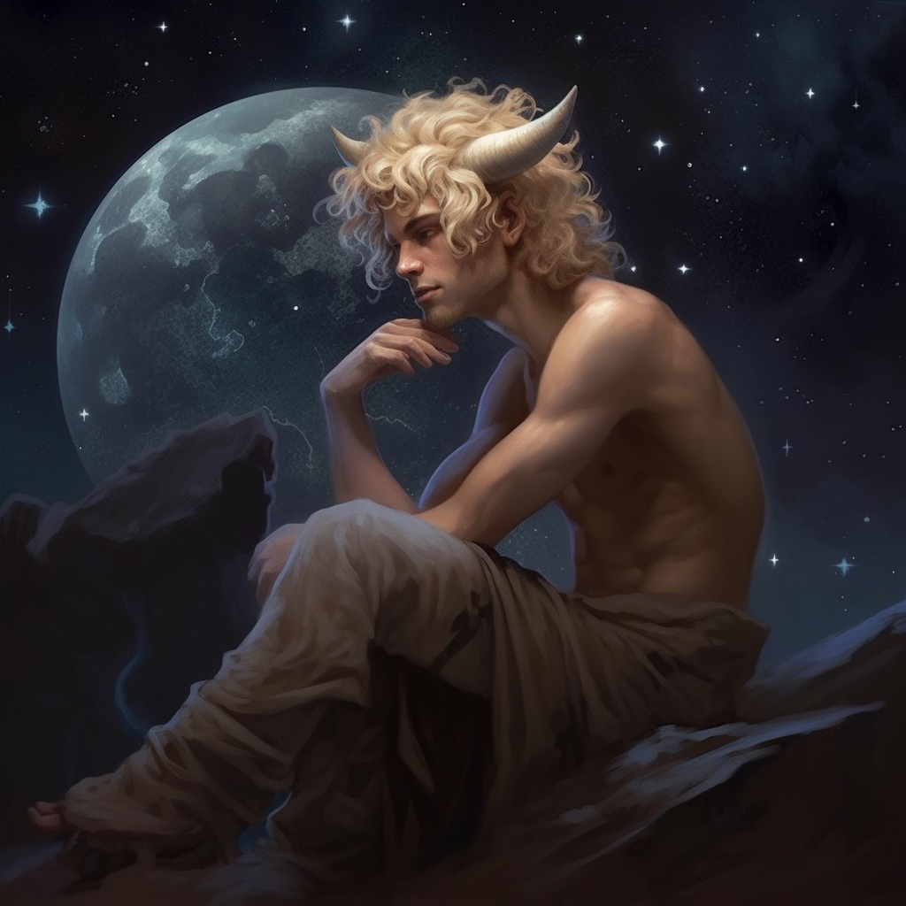

Resopath of Stars · Teacher in Exile · The Awkward Tutor

| Field | Value |
|---|---|
| Name | Miele |
| Player | Jordan |
| Level | 4 |
| Ancestry | Satyr (fey) |
| Alignment | Neutral |
| Background | Sage |
| Specialization | Resopath 4 — The Talent |
| System | D&D 5e + MCDM Talent |
| Status | Built for Skai Holt & Ughardi; never brought to table |
| Field | Text |
|---|---|
| Personality Trait | I am horribly, horribly awkward in social situations. |
| Ideal | Logic. Emotions must not cloud our logical thinking. |
| Bond | It is my duty to protect my students. |
| Flaw | I overlook obvious solutions in favor of complicated ones. |
Miele is conceived as a teacher — he held that role before the campaign would have begun — though no specific students, school, or curriculum have been established. The bond points forward as well as back: any pupil he gathers in play would fall under the same duty.
Arcana +8 (expertise-tier), Acrobatics +5, Sleight of Hand +5, Stealth +5, Investigation +4, Nature +4, Religion +4, Insight +3, History +2, Performance +2, Persuasion +2, Survival +1. Other skills modify off raw ability scores.
| Attack | Hit | Damage | Type | Notes |
|---|---|---|---|---|
| Ram (unarmed) | +2 | 1d4 | B | Head and horns; bludgeoning + STR mod |
| Spear | +2 | 1d6 | P | Versatile (1d8); thrown 20/60 |
| Light Crossbow | +5 | 1d8 | P | Range 80/320; ammunition; loading; two-handed |
| Dagger | +5 | 1d4+3 | P | Finesse, light, thrown 20/60 (×2 carried) |
| Feature | Effect |
|---|---|
| Fey | Creature type is fey, rather than humanoid. |
| Magic Resistance | Advantage on saving throws against spells and other magical effects. |
| Mirthful Leaps | On any long or high jump, roll a d8 and add the result to the feet covered — even on a standing jump. The extra distance costs movement as normal. |
| Ram | May use head and horns to make unarmed strikes. On a hit, deals bludgeoning damage equal to 1d4 + STR modifier. |
Feature: Researcher. When Miele attempts to learn or recall a piece of lore that he does not know, he often knows where and from whom to obtain it. Usually the source is a library, scriptorium, university, or another scholar or learned creature. The GM may rule that the knowledge is secreted away in an almost inaccessible place, or simply cannot be found — in which case unearthing it can occasion an adventure or a whole campaign.
Miele’s starting equipment includes a letter from a dead colleague posing a question you have not yet been able to answer. The question itself is deliberately unspecified — a blank hook waiting on the table that never came. — Equipment note, character sheet
Miele’s class is Resopath, an MCDM Talent path centred on terrain manipulation and the resonant warping of space. Powers cost no slots; instead, the manifestation of higher-order powers risks strain.
| Feature | Effect |
|---|---|
| Manipulate Terrain | Shape the terrain around Miele, making it disadvantageous for enemies — grasping hands, sentient vines, or other hindrances. Bonus action: choose a point on the ground within 60 ft. A 20-foot-square area centred on that point becomes difficult terrain for creatures of his choice. The effect remains for 1 minute, or until Miele uses this feature again. Once established, he may use a bonus action each round to move the area up to 20 ft, or to move one willing creature he can see within the area to any unoccupied space within the area. Usable a number of times equal to his INT modifier (minimum once) per long rest. Currently: 4 uses/day. |
| Psionic Exertion: Expanded Power | After making a manifestation test for a power that creates an area of effect, Miele may gain strain equal to the power’s order to double all dimensions of the area of effect. |
| Learning from Others | Listed on sheet (Talent feature at level 4). |
5th- and 6th-order tiers are unlocked at higher levels and are not yet available at Resopath 4.
Every power of 2nd order or higher requires a manifestation test at the end of its manifestation time. Roll the manifestation die (d4) against the power’s manifestation score (= its order, +1 per other concentrated power):
If gained strain would exceed the strain maximum, Miele chooses: manifest then die, or do not manifest, gain no strain, drop to 0 HP.
On gaining strain, Miele assigns it freely between Body, Mind, and Soul. Effects are cumulative per track per level. Short rest: spend Hit Dice to remove strain (1 per die). Long rest: strain returns to 0. Exceeding strain maximum kills him; if revived after a strain-death, he returns at maximum strain.
On a failed Constitution save to maintain concentration on Talent powers, Miele may instead choose to gain strain equal to the sum of the orders of all powers being concentrated on, keeping them active.
The stars tell all our stories. The birds speak the stars’ language to us. — Miele’s signature line
A young satyr scholar — horns just curling in from the temples, hair the colour of pale wheat — built around the contradiction between an INT of 18 and a CHA of 11. He thinks fast; he speaks awkwardly. He is most comfortable in libraries, in front of pupils, or alone with a sky.
The cosmology he carries is small and specific. The stars are the record of every story that has happened and every story that will. Birds — messengers between the high air and the low ground — carry that record down in song. To listen well to a bird is, in a real sense, to listen to a star. This is the kind of thing Miele believes logically, and which he would refuse to characterise as emotional or religious.
His Resopath powers belong to the same worldview. The Talent does not, in his framing, channel a god or a spirit; it is the same listening, made physical. Terrain bends because the world is already willing to bend; one only has to know how to ask.
His bond — It is my duty to protect my students — predates the campaign; he was a teacher before the table was meant to meet him. No specific pupils, institution, or fallen colleague have been written. The dead colleague’s unanswered letter, his bond, and his flaw all gesture at the same shape: a man who would rather build an elegant cathedral of method than admit the obvious answer is in front of him.
Miele was built for the Skai Holt & Ughardi campaign but never brought to the table. No gameplay events, no in-fiction history, no party encounters. This dossier records the sheet as it stood, and the concept as it was imagined, before the character could be played. — Compiler’s note
| Item | State |
|---|---|
| Languages | Two additional languages beyond Common & Sylvan to be chosen. |
| Dead Colleague | Name, relationship, field of study, and the unanswered question. |
| Students | Who they are, where they studied with him, where they are now. |
| Starting Pack | Scholar’s vs. explorer’s. |
| Spear or Crossbow | Initial weapon choice from sage background. |